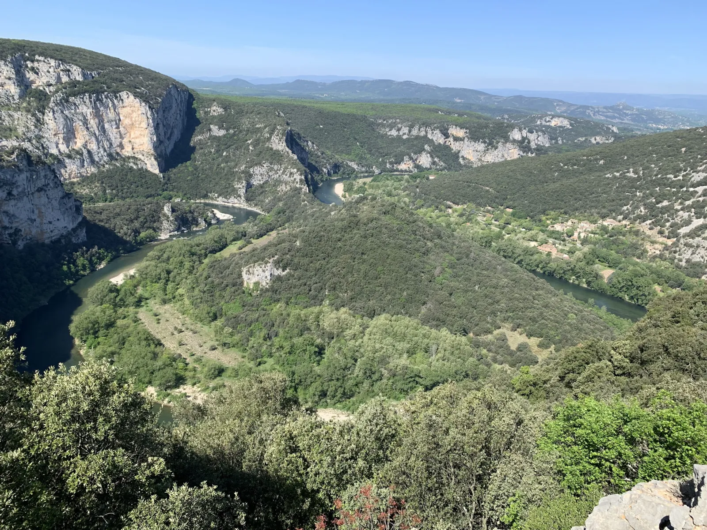

À une petite vingtaine de minutes des Cabritas Sud Ardèche, la route touristique de la Haute Corniche (D290) longe le bord vertigineux des Gorges de l'Ardèche entre Vallon-Pont-d'Arc et Saint-Martin-d'Ardèche. Ce ruban de bitume sinueux, aménagé à la fin des années 1960, dessert une dizaine de belvédères aménagés d'où l'on domine le canyon calcaire et la rivière serpentant plus de 200 mètres en contrebas. Classée Réserve Naturelle Nationale depuis 1980 sur près de 1 950 hectares, la zone protège un paysage sauvage de falaises, de grottes et de forêts méditerranéennes, parmi les plus spectaculaires de France.

Une route de crête taillée dans la falaise
La D290 déroule ses virages sur une trentaine de kilomètres au plus près du rebord du canyon, offrant à chaque belvédère un angle différent sur les gorges : larges méandres, aiguilles rocheuses, forêts de chênes verts accrochées à la roche. La route se prend aisément dans les deux sens depuis Vallon-Pont-d'Arc ou Saint-Martin-d'Ardèche, avec de nombreuses aires de stationnement pour s'arrêter à chaque point de vue. Mieux vaut prévoir une demi-journée pour en profiter sans se presser, jumelles et appareil photo à portée de main.
Le Balcon des Templiers et le Belvédère de la Madeleine, deux incontournables
Le Balcon des Templiers, perché en aplomb d'un grand méandre, est sans doute le point de vue le plus photographié de la route : un éperon rocheux qui semble suspendu au-dessus du vide, avec une vue à 180° sur la rivière. Un peu plus loin, le Belvédère de la Madeleine surplombe le site de la grotte du même nom et le célèbre Cirque de la Madeleine, un amphithéâtre naturel de falaises blanches qui compte parmi les images les plus emblématiques de l'Ardèche.
Bon à savoir avant votre visite
Comptez environ 20-25 minutes de route depuis Les Cabritas Sud-Ardèche pour rejoindre les premiers belvédères de la Haute Corniche. La route est sinueuse et étroite par endroits : mieux vaut rouler tranquillement, surtout en été quand les parkings des belvédères se remplissent tôt. Prévoyez de bonnes chaussures pour les quelques marches d'accès aux points de vue, de l'eau, et une lumière rasante en fin de journée pour les plus belles photos. L'accès aux belvédères est gratuit.
Infos pratiques depuis Les Cabritas
- Distance depuis Saint-Alban-Auriolles : environ 20-25 min de route
- Meilleure période : printemps et automne pour la lumière, tôt le matin en été pour éviter l'affluence
- Idéal pour : road trip, photographes, familles, amateurs de grands espaces
Envie de découvrir La Haute Corniche des Gorges de l'Ardèche et ses belvédères depuis votre gîte en Ardèche ?
Les Cabritas Sud-Ardèche vous accueillent à Saint-Alban-Auriolles, au cœur du Sud Ardèche, pour un séjour confortable avec piscine privée, à deux pas des plus beaux sites de la région.
Vérifier les disponibilités